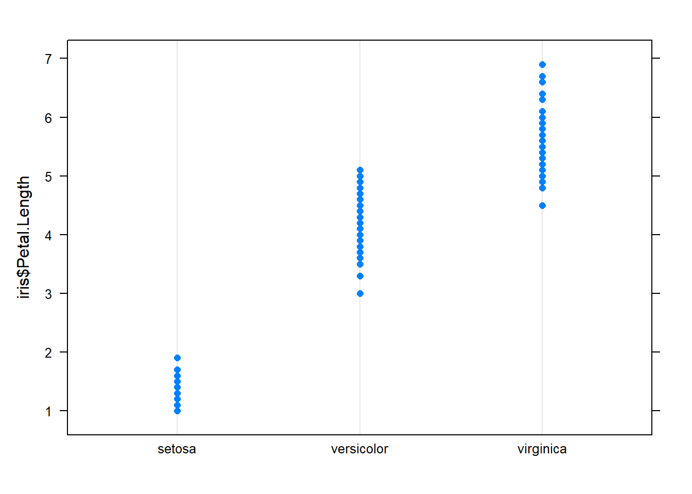
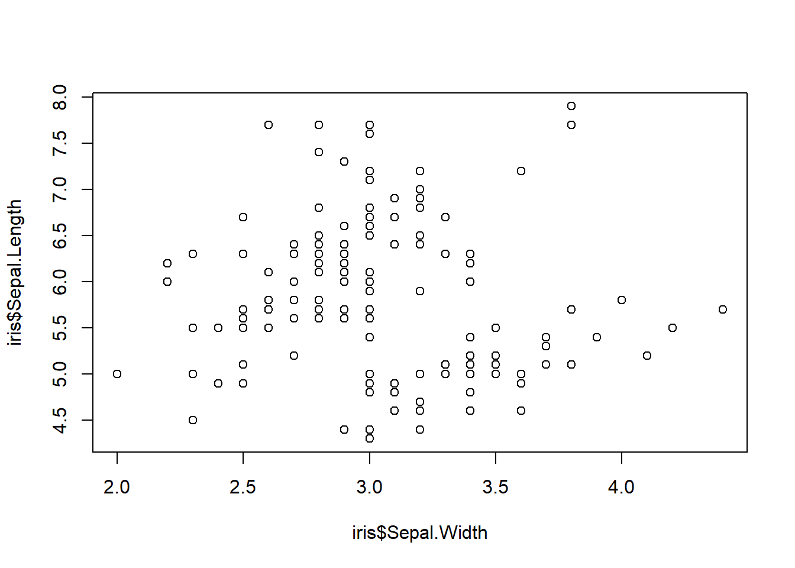

Introduction to Data Wrangling & Descriptive Statistics: Coding Guide
Josh Carrell - Utah State University, MS Ecology
Last Update: May 13, 2022
Data
For this week’s coding guide (and assignment!) we are going to use data from several different sources. Some are not natural resource related but they are good datasets anyhow!
We’ll be working with the following data for this coding guide and some for our assignments:
Mental health survey of tech industry professionals. CSV format. Found in week 2 module for download.
The iris dataset. Already pre-built in R.
beaver1. This dataset comes from the datasets package.
I’ll show you how to load all this data as we go through the code below.
Data Wrangling
Data Wrangling is the process of cleaning and unifying messy and complex data sets for easy access and analysis. When working on a project with many stakeholders, our data often comes from various sources. This means you may be working with several data structuring formats, missing values, and incorrect information.
We’re going to walk through some of the very common methods and functions used for Data Wrangling.
Explore the Data
The data is in the week 2 module as “survey.csv”.
To load a csv in R, use the read.csv() function and direct R to load the data from a specific address in your files. See below in the code:
survey <- read.csv("D:/R Textbook Template/NR6950 Notebook/NR 6950 Notebook/Data/DataWrangling/survey.csv") # Load data - this will be a different pathway for you.
head(survey,5) # View first 5 rows of dataset using the head() function## Timestamp Age Gender Country state self_employed family_history
## 1 8/27/2014 11:29 37 Female United States IL <NA> No
## 2 8/27/2014 11:29 44 M United States IN <NA> No
## 3 8/27/2014 11:29 32 Male Canada <NA> <NA> No
## 4 8/27/2014 11:29 31 Male United Kingdom <NA> <NA> Yes
## 5 8/27/2014 11:30 31 Male United States TX <NA> No
## treatment work_interfere no_employees remote_work tech_company benefits
## 1 Yes Often 25-Jun No Yes Yes
## 2 No Rarely More than 1000 No No Don't know
## 3 No Rarely 25-Jun No Yes No
## 4 Yes Often 26-100 No Yes No
## 5 No Never 100-500 Yes Yes Yes
## care_options wellness_program seek_help anonymity leave
## 1 Not sure No Yes Yes Somewhat easy
## 2 No Don't know Don't know Don't know Don't know
## 3 No No No Don't know Somewhat difficult
## 4 Yes No No No Somewhat difficult
## 5 No Don't know Don't know Don't know Don't know
## mental_health_consequence phys_health_consequence coworkers supervisor
## 1 No No Some of them Yes
## 2 Maybe No No No
## 3 No No Yes Yes
## 4 Yes Yes Some of them No
## 5 No No Some of them Yes
## mental_health_interview phys_health_interview mental_vs_physical
## 1 No Maybe Yes
## 2 No No Don't know
## 3 Yes Yes No
## 4 Maybe Maybe No
## 5 Yes Yes Don't know
## obs_consequence comments
## 1 No <NA>
## 2 No <NA>
## 3 No <NA>
## 4 Yes <NA>
## 5 No <NA>Looking at the data above, it’s pretty messy. It’s also a very large dataset. It’d be easy to get lost just by scanning through this information in excel. Luckily R has a few build in function to make our lives easier when exploring the structure of newly acquired data.
dim()
The dim() function stands for dimensions and allows us to look at the dimensions of a dataset. The results look like this: Number of Rows x Number of Columns.
dim(survey) # view dimensions## [1] 1259 27names()
a simple function for looking at the column names of the dataset.
names(survey)## [1] "Timestamp" "Age"
## [3] "Gender" "Country"
## [5] "state" "self_employed"
## [7] "family_history" "treatment"
## [9] "work_interfere" "no_employees"
## [11] "remote_work" "tech_company"
## [13] "benefits" "care_options"
## [15] "wellness_program" "seek_help"
## [17] "anonymity" "leave"
## [19] "mental_health_consequence" "phys_health_consequence"
## [21] "coworkers" "supervisor"
## [23] "mental_health_interview" "phys_health_interview"
## [25] "mental_vs_physical" "obs_consequence"
## [27] "comments"head() and tail()
Head and tail sounds like a horse shampoo. They’re actually made for viewing the beginnings and endings of datasets. head() looking at the beginning; tail() looks at the end.
Lets view the first 10 rows and the last 7 rows of our data.
head(survey, 10) # looks at first 10## Timestamp Age Gender Country state self_employed family_history
## 1 8/27/2014 11:29 37 Female United States IL <NA> No
## 2 8/27/2014 11:29 44 M United States IN <NA> No
## 3 8/27/2014 11:29 32 Male Canada <NA> <NA> No
## 4 8/27/2014 11:29 31 Male United Kingdom <NA> <NA> Yes
## 5 8/27/2014 11:30 31 Male United States TX <NA> No
## 6 8/27/2014 11:31 33 Male United States TN <NA> Yes
## 7 8/27/2014 11:31 35 Female United States MI <NA> Yes
## 8 8/27/2014 11:32 39 M Canada <NA> <NA> No
## 9 8/27/2014 11:32 42 Female United States IL <NA> Yes
## 10 8/27/2014 11:32 23 Male Canada <NA> <NA> No
## treatment work_interfere no_employees remote_work tech_company benefits
## 1 Yes Often 25-Jun No Yes Yes
## 2 No Rarely More than 1000 No No Don't know
## 3 No Rarely 25-Jun No Yes No
## 4 Yes Often 26-100 No Yes No
## 5 No Never 100-500 Yes Yes Yes
## 6 No Sometimes 25-Jun No Yes Yes
## 7 Yes Sometimes 5-Jan Yes Yes No
## 8 No Never 5-Jan Yes Yes No
## 9 Yes Sometimes 100-500 No Yes Yes
## 10 No Never 26-100 No Yes Don't know
## care_options wellness_program seek_help anonymity leave
## 1 Not sure No Yes Yes Somewhat easy
## 2 No Don't know Don't know Don't know Don't know
## 3 No No No Don't know Somewhat difficult
## 4 Yes No No No Somewhat difficult
## 5 No Don't know Don't know Don't know Don't know
## 6 Not sure No Don't know Don't know Don't know
## 7 No No No No Somewhat difficult
## 8 Yes No No Yes Don't know
## 9 Yes No No No Very difficult
## 10 No Don't know Don't know Don't know Don't know
## mental_health_consequence phys_health_consequence coworkers supervisor
## 1 No No Some of them Yes
## 2 Maybe No No No
## 3 No No Yes Yes
## 4 Yes Yes Some of them No
## 5 No No Some of them Yes
## 6 No No Yes Yes
## 7 Maybe Maybe Some of them No
## 8 No No No No
## 9 Maybe No Yes Yes
## 10 No No Yes Yes
## mental_health_interview phys_health_interview mental_vs_physical
## 1 No Maybe Yes
## 2 No No Don't know
## 3 Yes Yes No
## 4 Maybe Maybe No
## 5 Yes Yes Don't know
## 6 No Maybe Don't know
## 7 No No Don't know
## 8 No No No
## 9 No Maybe No
## 10 Maybe Maybe Yes
## obs_consequence comments
## 1 No <NA>
## 2 No <NA>
## 3 No <NA>
## 4 Yes <NA>
## 5 No <NA>
## 6 No <NA>
## 7 No <NA>
## 8 No <NA>
## 9 No <NA>
## 10 No <NA>tail(survey, 7) # looks at last 7## Timestamp Age Gender Country state self_employed
## 1253 8/20/2015 16:52 29 male United States NC No
## 1254 8/25/2015 19:59 36 Male United States UT No
## 1255 9/12/2015 11:17 26 male United Kingdom <NA> No
## 1256 9/26/2015 1:07 32 Male United States IL No
## 1257 11/7/2015 12:36 34 male United States CA No
## 1258 11/30/2015 21:25 46 f United States NC No
## 1259 2/1/2016 23:04 25 Male United States IL No
## family_history treatment work_interfere no_employees remote_work
## 1253 Yes Yes Sometimes 100-500 Yes
## 1254 Yes No Rarely More than 1000 No
## 1255 No Yes <NA> 26-100 No
## 1256 Yes Yes Often 26-100 Yes
## 1257 Yes Yes Sometimes More than 1000 No
## 1258 No No <NA> 100-500 Yes
## 1259 Yes Yes Sometimes 26-100 No
## tech_company benefits care_options wellness_program seek_help anonymity
## 1253 Yes Yes Yes Yes No Yes
## 1254 No Don't know No Yes Yes Don't know
## 1255 Yes No No No No Don't know
## 1256 Yes Yes Yes No No Yes
## 1257 Yes Yes Yes No No Don't know
## 1258 Yes No Yes No No Don't know
## 1259 No Yes Yes No No Yes
## leave mental_health_consequence phys_health_consequence
## 1253 Don't know Yes No
## 1254 Somewhat easy Maybe Maybe
## 1255 Somewhat easy No No
## 1256 Somewhat difficult No No
## 1257 Somewhat difficult Yes Yes
## 1258 Don't know Yes No
## 1259 Don't know Maybe No
## coworkers supervisor mental_health_interview phys_health_interview
## 1253 Some of them No No Maybe
## 1254 Some of them Some of them No No
## 1255 Some of them Some of them No No
## 1256 Some of them Yes No No
## 1257 No No No No
## 1258 No No No No
## 1259 Some of them No No No
## mental_vs_physical obs_consequence comments
## 1253 No No <NA>
## 1254 Don't know No <NA>
## 1255 Don't know No <NA>
## 1256 Yes No <NA>
## 1257 No No <NA>
## 1258 No No <NA>
## 1259 Don't know No <NA>str()
str() stands for structure. This function allows to compactly display the structure of an R object, in this case our survey data.
Running str(survey) will give us the column names, the class type of each column (remember week 1) and the first few rows of data for each column.
str(survey)## 'data.frame': 1259 obs. of 27 variables:
## $ Timestamp : chr "8/27/2014 11:29" "8/27/2014 11:29" "8/27/2014 11:29" "8/27/2014 11:29" ...
## $ Age : num 37 44 32 31 31 33 35 39 42 23 ...
## $ Gender : chr "Female" "M" "Male" "Male" ...
## $ Country : chr "United States" "United States" "Canada" "United Kingdom" ...
## $ state : chr "IL" "IN" NA NA ...
## $ self_employed : chr NA NA NA NA ...
## $ family_history : chr "No" "No" "No" "Yes" ...
## $ treatment : chr "Yes" "No" "No" "Yes" ...
## $ work_interfere : chr "Often" "Rarely" "Rarely" "Often" ...
## $ no_employees : chr "25-Jun" "More than 1000" "25-Jun" "26-100" ...
## $ remote_work : chr "No" "No" "No" "No" ...
## $ tech_company : chr "Yes" "No" "Yes" "Yes" ...
## $ benefits : chr "Yes" "Don't know" "No" "No" ...
## $ care_options : chr "Not sure" "No" "No" "Yes" ...
## $ wellness_program : chr "No" "Don't know" "No" "No" ...
## $ seek_help : chr "Yes" "Don't know" "No" "No" ...
## $ anonymity : chr "Yes" "Don't know" "Don't know" "No" ...
## $ leave : chr "Somewhat easy" "Don't know" "Somewhat difficult" "Somewhat difficult" ...
## $ mental_health_consequence: chr "No" "Maybe" "No" "Yes" ...
## $ phys_health_consequence : chr "No" "No" "No" "Yes" ...
## $ coworkers : chr "Some of them" "No" "Yes" "Some of them" ...
## $ supervisor : chr "Yes" "No" "Yes" "No" ...
## $ mental_health_interview : chr "No" "No" "Yes" "Maybe" ...
## $ phys_health_interview : chr "Maybe" "No" "Yes" "Maybe" ...
## $ mental_vs_physical : chr "Yes" "Don't know" "No" "No" ...
## $ obs_consequence : chr "No" "No" "No" "Yes" ...
## $ comments : chr NA NA NA NA ...is.na()
is.na() stands for “are there any null/not available values in the data?”. Using this function means we’re just looking to see if anything is missing. If there is a missing value, the response will be TRUE. If there is a value, the response is FALSE.
I wont run the code in this document but you will in your R script.
Run the following code in your R script: is.na(survey)
What happened? It ran through the entire dataset responding to each cell whether it was null or had information. Pretty terrible to look at and not really helpful if we want to see how many null values or where those null values are. Luckily, table() helps us solve that.
table()
table() identifies the quantity of values in a given dataset and column. Let’s run table() around our is.na() function on the survey data.
table(is.na(survey))##
## FALSE TRUE
## 32101 1892Way freaking easier. There are 1892 missing values in our dataset.
Lets use table() to check individual columns.
table(is.na(survey$Age)) # checking age for NA's##
## FALSE
## 1259table(is.na(survey$comments)) # checking comments for NA's##
## FALSE TRUE
## 164 1095So for age, there were zero rows left blank. How many blanks were left in the comments?
NOTE: table() isn’t only for finding NA’s. This function allows you to see each row data per column and their quantity. Lets see the gender reponse of each survey participant.
table(survey$Gender) # Gender responses##
## A little about you
## 1
## Agender
## 1
## All
## 1
## Androgyne
## 1
## cis-female/femme
## 1
## Cis Female
## 1
## cis male
## 1
## Cis Male
## 2
## Cis Man
## 1
## Enby
## 1
## f
## 15
## F
## 38
## femail
## 1
## Femake
## 1
## female
## 62
## Female
## 121
## Female
## 2
## Female (cis)
## 1
## Female (trans)
## 2
## fluid
## 1
## Genderqueer
## 1
## Guy (-ish) ^_^
## 1
## m
## 34
## M
## 116
## Mail
## 1
## maile
## 1
## Make
## 4
## Mal
## 1
## male
## 206
## Male
## 615
## Male-ish
## 1
## Male
## 3
## Male (CIS)
## 1
## male leaning androgynous
## 1
## Malr
## 1
## Man
## 2
## msle
## 1
## Nah
## 1
## Neuter
## 1
## non-binary
## 1
## ostensibly male, unsure what that really means
## 1
## p
## 1
## queer
## 1
## queer/she/they
## 1
## something kinda male?
## 1
## Trans-female
## 1
## Trans woman
## 1
## woman
## 1
## Woman
## 3length(unique(survey$Gender)) # code bonus: view how many unique responses there were.## [1] 49There were quite a few different answers and some misspellings. We can use the tidyverse to work with that.
Manipulate the Data
For this section, we’re going to use another dataset, iris. If you remember from week 1, we briefly used this dataset. To refresh yourself, feel free to code: ?iris
The tidyverse
We will be using what is called the tidyverse.
The tidyverse is an opinionated collection of R packages designed for data science. All packages share an underlying design philosophy, grammar, and data structures. - tidyverse.org
You’ll notice when you install and load the tidyverse packages, several packages will upload. Each package brings functions that are helpful in data science and data wrangling.
Let’s install.
# install.packages("tidyverse") # if never done before
library(tidyverse) # loaddplyr
dplyr is a package that makes part of the larger tidyverse. dplyr is a grammar of data manipulation, providing a consistent set of verbs that help you solve the most common data manipulation challenges. - https://dplyr.tidyverse.org/
We will go through the major functions of dplyr.
piping ( %>% )
%>% is called the forward pipe operator. Essentially it means by using this symbol after a dataset, we want to directly add functions applied to that dataset. Pipes let you take the output of one function and send it directly to the next.
Pay attention to the code and look for the %>%. As we go througt the code it should be much more clear on how to use them. If not, please feel free to come to zoom hours or Google “piping in dplyr”.
Note: a short cut to making the %>% symbol:
on windows: ctrl+shift+m
on mac: command+shift+m
select()
select() picks variables based on their names.
Lets create a new variable called iris_select and let’s say we only want to look at the following:
Species
Petal Length
Petal Width
names(iris) # Call column names## [1] "Sepal.Length" "Sepal.Width" "Petal.Length" "Petal.Width" "Species"iris_select <- iris %>% # create new variable from survey data,add pipe to add function
select(Species, Petal.Length, Petal.Width)# select() function. Select the specific columns of interest
names(iris_select) # column names of newly created dataset of selected columns## [1] "Species" "Petal.Length" "Petal.Width"head(iris_select, 5) # check out the new data with 5 rows## Species Petal.Length Petal.Width
## 1 setosa 1.4 0.2
## 2 setosa 1.4 0.2
## 3 setosa 1.3 0.2
## 4 setosa 1.5 0.2
## 5 setosa 1.4 0.2We see that using the piping and the select function, we were able to create a new dataset with our desired columns directly from the survey dataset.
mutate()
mutate() allows for the creation of new variables that are functions of existing variables. Basically we can create new columns in our existing data based on conditions or equations from other columns.
Lets create a new column in iris_select called Times.Bigger. This column should reflect how many times bigger in centimeters the petal length is than the petal width for each flower.
iris_select <- iris %>% # Call from iris
select(Species, Petal.Length, Petal.Width) %>% # Select our columns of interest
mutate(Times.Bigger = (Petal.Length/Petal.Width)) # Create new column, set = to condition/function
names(iris_select) # Check names, notice the new column## [1] "Species" "Petal.Length" "Petal.Width" "Times.Bigger"head(iris_select, 5) # Does the column look right? it worked!## Species Petal.Length Petal.Width Times.Bigger
## 1 setosa 1.4 0.2 7.0
## 2 setosa 1.4 0.2 7.0
## 3 setosa 1.3 0.2 6.5
## 4 setosa 1.5 0.2 7.5
## 5 setosa 1.4 0.2 7.0filter()
filter() does exactly what it sounds like. This function allows us to filter through our dataset based on columns, values, and conditions.
For this example, lets use filter() to make a new dataset called setosa_small that is populated with only data of the setosa species with sepal lengths smaller than 5.
We can do this by running conditions inside the filter() function.
To filter by specific value, use 2 equal signs (==) and set the column name to the value. In this case, Species will equal setosa (Species == “setosa”). NOTE: Since setosa is a character string, you must include quotation marks.
To filter in a numeric condition, use a mathematical operator. In this case, we want sepal length less than 5 (Sepal.Length < 5). NOTE: Sepal length has numeric values, no quotations as it is not a character.
Lets run both conditions in the same function. String conditions together with the % symbol.
setosa_small <- iris %>% # create from iris dataset
filter(Species == "setosa" & Sepal.Length < 5) # filter for species name and sepal length under 5
setosa_small # view the new dataset## Sepal.Length Sepal.Width Petal.Length Petal.Width Species
## 1 4.9 3.0 1.4 0.2 setosa
## 2 4.7 3.2 1.3 0.2 setosa
## 3 4.6 3.1 1.5 0.2 setosa
## 4 4.6 3.4 1.4 0.3 setosa
## 5 4.4 2.9 1.4 0.2 setosa
## 6 4.9 3.1 1.5 0.1 setosa
## 7 4.8 3.4 1.6 0.2 setosa
## 8 4.8 3.0 1.4 0.1 setosa
## 9 4.3 3.0 1.1 0.1 setosa
## 10 4.6 3.6 1.0 0.2 setosa
## 11 4.8 3.4 1.9 0.2 setosa
## 12 4.7 3.2 1.6 0.2 setosa
## 13 4.8 3.1 1.6 0.2 setosa
## 14 4.9 3.1 1.5 0.2 setosa
## 15 4.9 3.6 1.4 0.1 setosa
## 16 4.4 3.0 1.3 0.2 setosa
## 17 4.5 2.3 1.3 0.3 setosa
## 18 4.4 3.2 1.3 0.2 setosa
## 19 4.8 3.0 1.4 0.3 setosa
## 20 4.6 3.2 1.4 0.2 setosasummarise()
summarise() creates a new data frame. It will have one (or more) rows for each combination of grouping variables; if there are no grouping variables, the output will have a single row summarising all observations in the input. It will contain one column for each grouping variable and one column for each of the summary statistics that you have specified. - https://dplyr.tidyverse.org/reference/summarise.html
Basically summarise() allows us to view statistics of specific columns in a new dataset. You can use any of the descriptive statistic functions you will learn below in the Descriptive Statistics portion.
let’s make a new data frame called species_sepals that has the mean, max, and min values of sepal width.
iris %>% # call from iris data
summarise(mean(Sepal.Width), max(Sepal.Width), min(Sepal.Width)) # run functions, each will be new col.## mean(Sepal.Width) max(Sepal.Width) min(Sepal.Width)
## 1 3.057333 4.4 2How did it turn out? We got the values we needed but the values are for the whole dataset, not broken up by species. Let’s use the group_by function.
group_by()
The group_by() function allows us to break up our dataset by a specific value. Above we wanted to see the mean, max, and min values of sepa width by species. We can use group_by(Species) for this to work.
iris %>% # call from iris data
group_by(Species) %>%
summarise(mean(Sepal.Width), max(Sepal.Width), min(Sepal.Width)) # run functions, each will be new col.## # A tibble: 3 x 4
## Species `mean(Sepal.Width)` `max(Sepal.Width)` `min(Sepal.Width)`
## <fct> <dbl> <dbl> <dbl>
## 1 setosa 3.43 4.4 2.3
## 2 versicolor 2.77 3.4 2
## 3 virginica 2.97 3.8 2.2arrange()
arrange() allows us to rearrange our data based on certain conditions. Let’s create a new dataset called virginica that contains only the virginica species, has sepal widths greater than 2.9, and is arranged in descending sepal lengths (we will use the desc() function).
NOTE: desc() stands for descending. It will places the rows in descending order.
iris_new <- iris %>% # call from iris data
filter(Species == "virginica" & Sepal.Width > 2.9) %>% # filter species and sepal width
arrange(desc(Sepal.Length)) # arrange the data by descending values in sepal length
iris_new # view the new data frame## Sepal.Length Sepal.Width Petal.Length Petal.Width Species
## 1 7.9 3.8 6.4 2.0 virginica
## 2 7.7 3.8 6.7 2.2 virginica
## 3 7.7 3.0 6.1 2.3 virginica
## 4 7.6 3.0 6.6 2.1 virginica
## 5 7.2 3.6 6.1 2.5 virginica
## 6 7.2 3.2 6.0 1.8 virginica
## 7 7.2 3.0 5.8 1.6 virginica
## 8 7.1 3.0 5.9 2.1 virginica
## 9 6.9 3.2 5.7 2.3 virginica
## 10 6.9 3.1 5.4 2.1 virginica
## 11 6.9 3.1 5.1 2.3 virginica
## 12 6.8 3.0 5.5 2.1 virginica
## 13 6.8 3.2 5.9 2.3 virginica
## 14 6.7 3.3 5.7 2.1 virginica
## 15 6.7 3.1 5.6 2.4 virginica
## 16 6.7 3.3 5.7 2.5 virginica
## 17 6.7 3.0 5.2 2.3 virginica
## 18 6.5 3.0 5.8 2.2 virginica
## 19 6.5 3.2 5.1 2.0 virginica
## 20 6.5 3.0 5.5 1.8 virginica
## 21 6.5 3.0 5.2 2.0 virginica
## 22 6.4 3.2 5.3 2.3 virginica
## 23 6.4 3.1 5.5 1.8 virginica
## 24 6.3 3.3 6.0 2.5 virginica
## 25 6.3 3.4 5.6 2.4 virginica
## 26 6.2 3.4 5.4 2.3 virginica
## 27 6.1 3.0 4.9 1.8 virginica
## 28 6.0 3.0 4.8 1.8 virginica
## 29 5.9 3.0 5.1 1.8 virginicaDescriptive Statistics
“Descriptive statistics are brief descriptive coefficients that summarize a given data set, which can be either a representation of the entire population or a sample of a population. Descriptive statistics are broken down into measures of central tendency and measures of variability (spread)” - The first thing to appear on google, www.investopedia.com
Basically, descriptive statistics gives us quick snapshots of our data. R has loaded in functions (and a variety of packages to use) to generate simple and fast descriptive statistics.
Data
We’re going to be using the beaver1 dataset from the datasets package. For more information, code ?beaver1 in your console or script after installing the package.
# install.packages("datasets") # install if you never had used it before
library(datasets)
head(beaver1) # initial look## day time temp activ
## 1 346 840 36.33 0
## 2 346 850 36.34 0
## 3 346 900 36.35 0
## 4 346 910 36.42 0
## 5 346 920 36.55 0
## 6 346 930 36.69 0Basic Statistics of base R
R comes with a basic package for looking at descriptive statistics. The following functions are base functions meaning we don’t need to load any packages, its already there.
mean()
Calculates mean.
mean(beaver1$temp)## [1] 36.86219min()
Minimum value of dataset column or list.
min(beaver1$temp)## [1] 36.33max
Maximum value of dataset column or list.
max(beaver1$temp)## [1] 37.53range()
The range of values in a column or list. Code is also included for finding difference in range of numbers and working with square brackets.
range(beaver1$temp) # returns minimum and max## [1] 36.33 37.53# If you would like to find the difference, run code below.
range(beaver1$temp)[2] - range(beaver1$temp)[1] ## [1] 1.2# Notes: Range returns 2 values. If you have a list (just like the list of 2 values above),
# you can use square brackets [] to choose which value in the list you want to work with.
# So we can choose the max value [2 or the second value in list] and subtract the min value
# [1 or the first value in list].
# For more on square brackets: https://www.dataanalytics.org.uk/r-object-elements-brackets-double-brackets-and/median()
Finds median of data column or list.
median(beaver1$temp)## [1] 36.87quantile()
Finds the indicated quantile. Quantile amount is in percent format (50% = 0.5)
# 30 percent quantile
quantile(beaver1$temp, 0.3)## 30%
## 36.789# 50 percent
quantile(beaver1$temp, 0.5)## 50%
## 36.87NOTE: You can also find the quantile of many values by including a list in the function.
numbers <- c(.25, .5, .75, .90) # I want these quantiles calculated
quantile(beaver1$temp, numbers) # running function with numbers variable as condition## 25% 50% 75% 90%
## 36.7600 36.8700 36.9575 37.0970sd() and var()
sd() stands for standard deviation. var() stands for the variance.
sd(beaver1$temp) # standard deviation## [1] 0.1934217var(beaver1$temp) # variance## [1] 0.03741196summary()
summary() is best the bang for your buck and shows almost (except sd and variance) everything we have covered so far in one single function. You can run it on entire datasets.
summary(beaver1)## day time temp activ
## Min. :346.0 Min. : 0.0 Min. :36.33 Min. :0.00000
## 1st Qu.:346.0 1st Qu.: 932.5 1st Qu.:36.76 1st Qu.:0.00000
## Median :346.0 Median :1415.0 Median :36.87 Median :0.00000
## Mean :346.2 Mean :1312.0 Mean :36.86 Mean :0.05263
## 3rd Qu.:346.0 3rd Qu.:1887.5 3rd Qu.:36.96 3rd Qu.:0.00000
## Max. :347.0 Max. :2350.0 Max. :37.53 Max. :1.00000mode()
mode() doesn’t exist.. I’m not sure why but there are other ways to find this value through using table() and sort.
sort(table(beaver1$temp), decreasing = TRUE)[1] # table() to find how many per value, sort() to sort!## 36.89
## 7# then just select the first value (which should be our most occurring value based on a decreasing
# sort) and use square brackets [1] to find the first value in the list.The psych package and describeBy()
There are a few packages that do some great descriptive analyses but psych is awesome. Install pysch and we are going to use describeBy(). This function can give us most of the descriptive statistics we need in a few lines of code. It can save you some time!
Let’s view the descriptive statistics for each column in iris and group them by species.
# install.packages("psych") # install if needed!
library(psych)##
## Attaching package: 'psych'## The following objects are masked from 'package:ggplot2':
##
## %+%, alpha## The following objects are masked from 'package:terra':
##
## describe, rescaledescribeBy(iris, # define what data you will be using
group = iris$Species) # define how you want to group your statistics##
## Descriptive statistics by group
## group: setosa
## vars n mean sd median trimmed mad min max range skew kurtosis
## Sepal.Length 1 50 5.01 0.35 5.0 5.00 0.30 4.3 5.8 1.5 0.11 -0.45
## Sepal.Width 2 50 3.43 0.38 3.4 3.42 0.37 2.3 4.4 2.1 0.04 0.60
## Petal.Length 3 50 1.46 0.17 1.5 1.46 0.15 1.0 1.9 0.9 0.10 0.65
## Petal.Width 4 50 0.25 0.11 0.2 0.24 0.00 0.1 0.6 0.5 1.18 1.26
## Species* 5 50 1.00 0.00 1.0 1.00 0.00 1.0 1.0 0.0 NaN NaN
## se
## Sepal.Length 0.05
## Sepal.Width 0.05
## Petal.Length 0.02
## Petal.Width 0.01
## Species* 0.00
## ------------------------------------------------------------
## group: versicolor
## vars n mean sd median trimmed mad min max range skew kurtosis
## Sepal.Length 1 50 5.94 0.52 5.90 5.94 0.52 4.9 7.0 2.1 0.10 -0.69
## Sepal.Width 2 50 2.77 0.31 2.80 2.78 0.30 2.0 3.4 1.4 -0.34 -0.55
## Petal.Length 3 50 4.26 0.47 4.35 4.29 0.52 3.0 5.1 2.1 -0.57 -0.19
## Petal.Width 4 50 1.33 0.20 1.30 1.32 0.22 1.0 1.8 0.8 -0.03 -0.59
## Species* 5 50 2.00 0.00 2.00 2.00 0.00 2.0 2.0 0.0 NaN NaN
## se
## Sepal.Length 0.07
## Sepal.Width 0.04
## Petal.Length 0.07
## Petal.Width 0.03
## Species* 0.00
## ------------------------------------------------------------
## group: virginica
## vars n mean sd median trimmed mad min max range skew kurtosis
## Sepal.Length 1 50 6.59 0.64 6.50 6.57 0.59 4.9 7.9 3.0 0.11 -0.20
## Sepal.Width 2 50 2.97 0.32 3.00 2.96 0.30 2.2 3.8 1.6 0.34 0.38
## Petal.Length 3 50 5.55 0.55 5.55 5.51 0.67 4.5 6.9 2.4 0.52 -0.37
## Petal.Width 4 50 2.03 0.27 2.00 2.03 0.30 1.4 2.5 1.1 -0.12 -0.75
## Species* 5 50 3.00 0.00 3.00 3.00 0.00 3.0 3.0 0.0 NaN NaN
## se
## Sepal.Length 0.09
## Sepal.Width 0.05
## Petal.Length 0.08
## Petal.Width 0.04
## Species* 0.00Basic Plots for Descriptive Statistics
We will spend week 3 going over data visualization and I’ll provide with several different ways to make some excellent graphs (and some maps! - that comes later too) but here are some simple ways to visualize your data.
hist()
Histograms give us insight into the spread of our data.
hist(iris$Sepal.Length)
boxplot()
Boxplots are very similar to histograms but can only measure the quantitative values of a qualitative variable. For example, we can look at the distribution of sepal lengths for each iris species.
Boxplot code always follows this format: boxplot(quantitative variable ~ qualitative variable) or boxplot(y axis ~ x axis).
boxplot(iris$Sepal.Length ~ iris$Species) # first y axis then x axis
dotplot()
Dotplots are very similar to boxplots only instead of boxes showing the spread of data, they show the actual value as a dot. Dotplots follow the same format as boxplots (y~x).
You’ll find dotplot() in the package: lattice. Install lattice and run a dotplot.
# install.packages(lattice) # install lattice if never used before!
library(lattice)
dotplot(iris$Petal.Length ~ iris$Species)
scatterplots
A scatterplot requires two quantitative variables and is used in linear regression to measure the relationships among variables. Scatterplots follow the same format as the other (y~x) but we only need to use the function, plot().
plot(iris$Sepal.Length ~ iris$Sepal.Width)
Done!
That was fairly long but I hope it helped you learn (or reinforce) some skills in getting to know your data. The week 2 assignment is in week 2 module.
As always, if you need any help feel free to contact me or come to the zoom office hours.